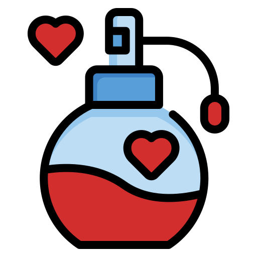

Karakterinize ve teninize en uygun parfümü keşfedin.
Kusursuz kokuyu bulmak bir sanat işidir. Teninize, yaşınıza ve tarzınıza en uygun notaları eşleştirebilmemiz için bilgilerinizi bizimle paylaşın.
Size hitap eden notaları seçin. Detaylarını görmek için fareyi üzerine getirin.
Binlerce koku kombinasyonu taranıyor...